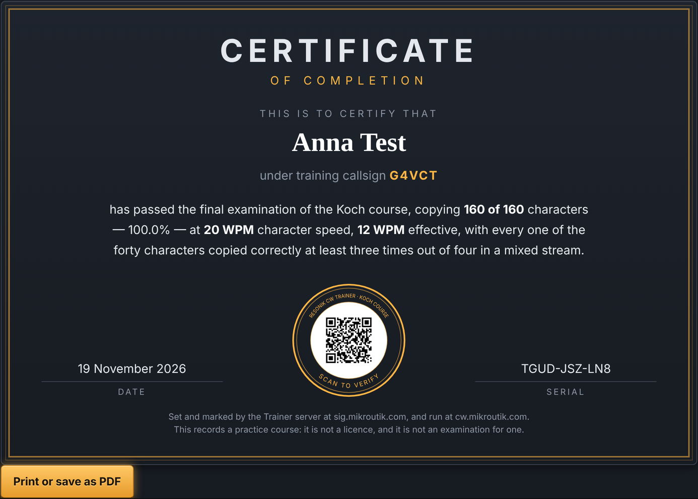

فهرست
فصل 4پایان دوره — آزمون نهایی و گواهی
سی و نه کاراکتر از چهل کاراکتر را آزمونی اضافه میکند که مرورگر خودتان طرح و تصحیح میکند و چیزی از آن از دستگاهتان بیرون نمیرود. کاراکتر چهلم فرق دارد: سرور آن آزمون را طرح میکند، تصحیح میکند و برایش گواهی صادر میکند. این فصل دربارهٔ همین گام آخر است.
4.1چه کسی میتواند در آن شرکت کند
هر کسی میتواند در آزمون نهایی شرکت کند و دوره را تمام کند. اما گواهی به یک عضو صادر میشود، پس به حسابی روی سرور نیاز دارد. پیشنهاد، پیش از شروع این را میگوید، نه اینکه بگذارد بعداً کشفش کنید.
اگر گواهی میخواهید، نخست در زبانهٔ On air وارد حساب شوید. شرکت در آزمون بدون ورود، دوره را تمام میکند و چیزی صادر نمیشود؛ و بعداً هم نمیتوان برای آزمونی که ناشناس داده شده گواهی گرفت، چون سرور کسی را ندارد که گواهی را به او بدهد و سندی ندارد که شما بودهاید.
4.2آزمون چگونه به مرورگر شما میرسد
دانستنش ارزش دارد، چون توضیح میدهد چرا این یک آزمون برخلاف هر بخش دیگر برنامه رفتار میکند.
سرور کاراکترها را نمیفرستد. آزمون را تولید میکند، آن را به فهرستی ساده از مدتزمانهای کلیدِ پایین و کلیدِ بالا تبدیل میکند و تنها همان اعداد را میفرستد. مرورگر شما از روی آنها تُن مینوازد و هرگز نمیداند چه حرفهایی را مینوازد. شما آنچه میشنوید تایپ میکنید و سرور پاسخها را با آنچه هنگام طرح آزمون ذخیره کرده مقایسه میکند.
پس چیزی در صفحه نیست که خوانده شود: کاراکترها نه در پاسخ هستند، نه در متغیری، و نه در شکلی رمزگذاریشده که صفحه بتواند بازش کند. جعبهٔ قفلی که کلیدش را همراهش بدهند قفل نیست، پس هیچکدام فرستاده نشد.
زیر و بم و بلندی تُن جانبی شما همچنان اعمال میشود، چون صدا را هنوز مرورگر شما میسازد. تنها زمانبندی از سرور میآید.
آزمون ۱۶۰ کاراکتر است — هر چهل کاراکتر، چهار بار — در سی و دو گروه پنجتایی. با سرعتهای معمول چهار تا پنج دقیقه طول میکشد. سرور آن را یک ساعت باز نگه میدارد.
4.3سرعت از آنِ شماست و روی گواهی مینشیند
هر دو سرعت شما در لحظهٔ طرح آزمون از Settings خوانده میشود و سرور ثبت میکند با چه سرعتی فرستاده است. چهل کاراکتر با ۲۰/۱۰ و چهل کاراکتر با ۲۵/۲۵ یک دستاورد نیستند، پس گواهی هر دو عدد را مینویسد و آنها را در یک عدد خلاصه نمیکند.
تغییر سرعت پس از شروع، آزمونِ در جریان را عوض نمیکند، و گواهی سرعتی را گزارش میدهد که آزمون واقعاً با آن فرستاده شده است. اگر میخواهید چیز مشخصی روی آن بنشیند، پیش از شروع تنظیمش کنید.
4.4قبولی و مردودی
قانونها همان دو قانون هر آزمون دیگرند: دستکم سه از چهار روی هر کاراکتر و دستکم ۹۰٪ دقت کلی. با چهل کاراکتر، فقط حجمش بیشتر است.
قبول شوید، دوره کامل میشود و گواهی بیدرنگ روی همان صفحه کشیده میشود.
مردود شوید، چیزی از شما گرفته نمیشود. نتیجه کاراکترهایی را که زیر سه از چهار آمدند نام میبرد و هر وقت خواستید میتوانید دوباره شرکت کنید.
خطای شبکه پس از آزمون همانطور که هست گزارش میشود: آزمون داده شد و تنها ارسال پاسخ شکست خورد. این با «کار شما دور ریخته شد» فرق دارد، و پیام میگوید کدامیک رخ داده است.
4.5گواهی


آنچه روی آن است، همه مشخص و قابل بررسی:
گواهی در خود صفحه کشیده میشود، نه اینکه فایلی به شما داده شود. View and print بازش میکند و پنجرهٔ چاپ خود مرورگر آن را به کاغذ یا PDF تبدیل میکند — یک برگ، افقی.
4.6صفحهٔ عمومی، و خاموش کردنش
آن مربع به صفحهای روی سرور اسکن میشود، در نشانی sig.mikroutik.com/certificate/<serial>، که هر کس سریال را داشته باشد میتواند بازش کند. آن صفحه کالساین، تاریخ، سرعت و نمره را نشان میدهد و بس. هرگز نام شما، هرگز ایمیل شما.
معامله همین است و رُک گفته میشود: سریالی که کسی نتواند بررسیاش کند ارزش چاپ ندارد، و صفحهای که بتوان بررسیاش کرد صفحهای است که کسی میتواند بخواندش. به همین دلیل خودتان تصمیم میگیرید که اصلاً پاسخ بدهد یا نه.
زیر Your account در زبانهٔ Settings، هر گواهی دکمهٔ Withdraw from the public page دارد. پس گرفته شود، آن صفحه «پیدا نشد» پاسخ میدهد و مربع دیگر باز نمیشود؛ Publish it again برش میگرداند. در هر دو حال نسخهٔ چاپشدهٔ شما دستنخورده است — کاغذ است و هیچ چیزی روی سرور به آن نمیرسد.
همان ردیف View and print هم دارد، پس گواهی را مدتها پس از بسته شدن زبانهای که در آن قبول شدید میتوان دوباره باز کرد.
4.7اگر حسابتان را ببندید
بستن حساب، آزمون و گواهی را یکسره حذف میکند و صفحهٔ بررسی دیگر به آن سریال پاسخ نمیدهد. بهتر است پیش از بستن بدانید تا پس از آن، چون هیچکدام برگشتپذیر نیست.
آزمون نهایی تنها بخشی از تمرین شماست که به سرور میرسد، مگر خودتان بیشتر بخواهید: باقی — تمرینها، تنظیمات، تاریخچهٔ جلسهها، آمار — در مرورگر شما میماند، مگر سوابق تمرین را روشن کنید (فصل ۷). بیانیهٔ حریم خصوصی دقیقاً میگوید چه چیزی نگه داشته میشود و تا کی: www.mikroutik.com/privacy.html، که از Help ← About هم پیوند دارد.